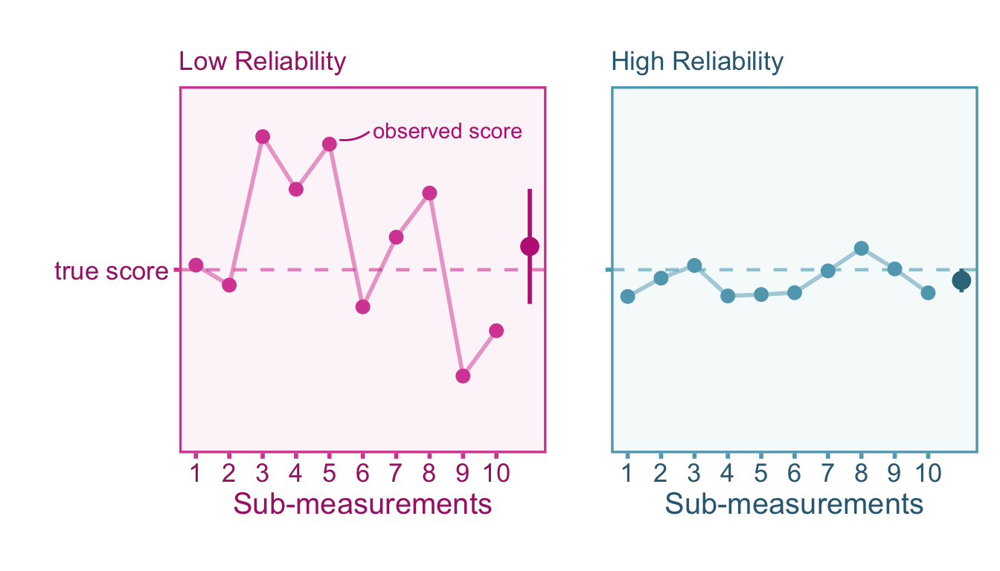
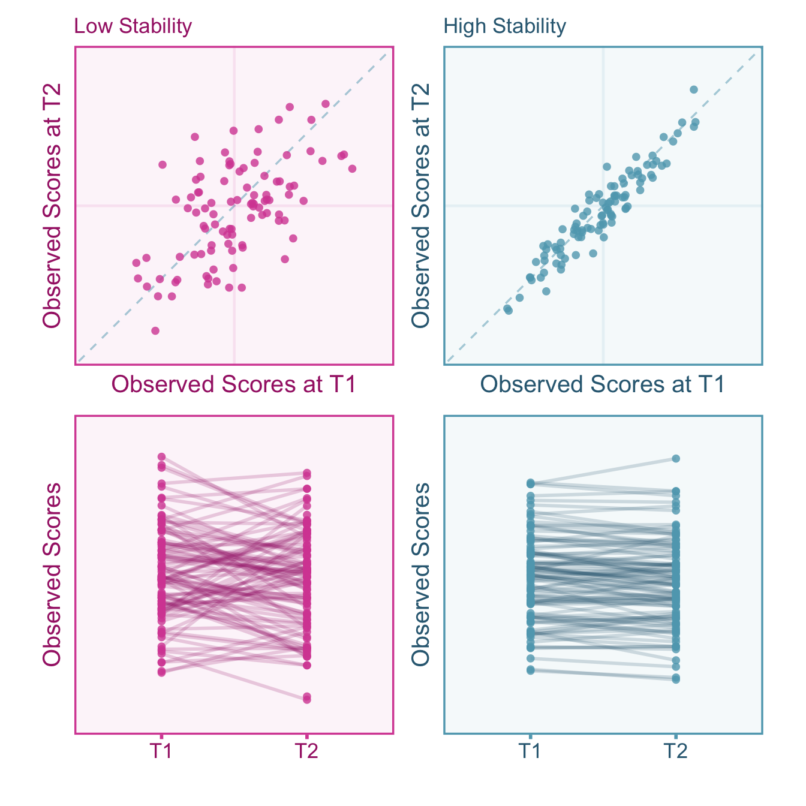
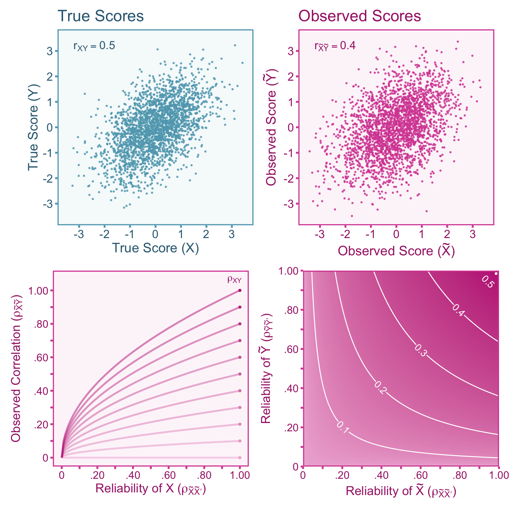
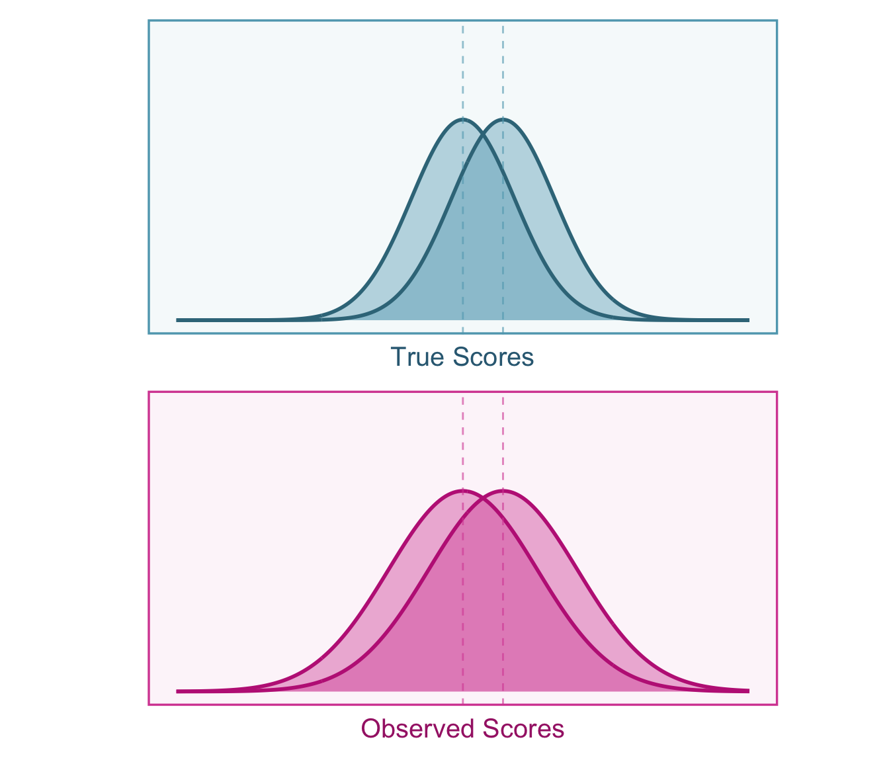

6 Classical Measurement Errors
6.1 Introduction
Measurements are often calibrated to their true value such that errors over repeated measurements tend to cancel out. In cases like this, averaging across the outcomes of multiple measurements may provide a more precise value. However, not all measures are created equal, some perform better than others. Ideally, measurement procedures should produce consistent scores upon repeated measurements. This repeatability is referred to as the reliability of a measure. A high quality measure should produce highly reliable scores. This section will review what reliability is in theory, how to estimate reliability, and how to correct effect sizes for measurement error.
6.2 Classical Measurement Error Calibration
The values of a target random variable are often referred to as true score and can be defined by some real characteristic or quality of an individual that is independent of the measurement procedure (e.g., height of a person), we can consider this a realist approach. However, if the underlying data generating process is unknown, one could opt to define the true score as the expected value of measurement outcomes (e.g., average reaction time over repeated trials), which can be thought of as an operationalist approach. Therefore if we take the operationalist approach, a convenient way to define the true scores for each individual is as follows:
\[ X := \mathbb{E}\left[\widetilde{X}\;\middle|\; \mathcal{M}_\ell \right], \tag{6.1}\]
Where \(\mathcal{M}\) is defined as the \(\sigma\)–field generated by the assignment-to-individual function \(\ell\),
\[ \mathcal{M}_\ell = \left\lbrace\ell^{-1}(\psi) \;\middle|\; \psi\in\Psi \right\rbrace \subset \mathcal{F}_{\Omega} \]
where \(\psi\in\Psi\) is an individual \(\psi\) in the population of interest \(\Psi\) and \(\mathcal{F}_{\Omega}\) is the \(\sigma\)–field over the outcome space \(\Omega\). Put in simpler words, the true score for an individual \(\psi\in\Psi\) is defined as the expected value over all possible measurement outcomes for that individual. This is definition of true scores that is typically attributed to Classical Test Theory (Donald W. Zimmerman 1975). As a consequence, this definition of true scores produces the following properties (Kroc and Zumbo 2020),
\[\begin{align} &\mathrm{I.}\;\;\;\sigma_{XE_X}=0 \\[.3em] &\mathrm{II.}\;\;\;\mathbb{E}\!\left[E_X\right]\!=0 \end{align} \tag{6.2}\]
where \(\sigma_{XE_X}\) is the covariance between the true value \(X\) and the associated error \(E_X\). Property \(\mathrm{I}\) ensures that there is no correlation between true scores and errors whereas property \(\mathrm{II}\) ensures that errors have a mean of zero in the population. A realist approach to measurement posits that \(X\) is not defined by the expectation of measurement outcomes, rather it is defined by a measurement independent attribute/characteristic. With this definition of true scores, properties \(\mathrm{I}\) and \(\mathrm{II}\) are not automatically true. If reasonable, the realist can assume that properties \(\mathrm{I}\) and \(\mathrm{II}\) are met. If the realist assumes these properties are met, then Equation 6.1 is a necessary consequence of those assumptions. In sum, the important difference between the realist and operationalist is that the properties described in Equation 6.2 must be assumed by the realist whereas it is a consequence of the definition of true scores for the operationalist.
Let’s denote a single instance of a measurement outcome with \(\widetilde{X}_{\mathsf{m}}:=\widetilde{X}(\omega)\) and a single instance of the true score \(X:=X(\omega)\) for some outcome \(\omega\in\ell^{-1}(\psi)\) for each individual \(\psi\in\Psi\). The subscript \(\mathsf{m}\) indexes the outcomes of a single measurement instance. Since the true score is fixed over all possible measurement outcomes within an individual this index is not needed for \(X\). For a measurement \(\mathsf{m}\), we can relate the true score \(X\) and the observed score \(\widetilde{X}_\mathsf{m}\) with the following algebraic structure,
\[ \widetilde{X}_{\mathsf{m}} = X + E_{X\mathsf{m}} \tag{6.3}\]
where the error is defined as \(E_{X\mathsf{m}} = \widetilde{X}_{\mathsf{m}} - X\). Since we have established that the covariance between \(X\) and \(E_X\) is zero, we can easily parse out the variance of the three components in Equation 6.3,
\[ \sigma^2_\widetilde{X} = \sigma^2_X + \sigma^2_{E_X}. \]
We can see that the variance of observed scores is a simple summation of the variance of true scores and error which tells us that if the measure was perfect (i.e., no measurement error) than the error variance would be zero and \(\sigma^2_\widetilde{X} = \sigma^2_X\).
6.3 Reliability
The reliability of \(X\) is defined as the variance of true scores over the variance in observed proxy scores \(X\) (i.e., an intra-class correlation),
\[ \rho_{\widetilde{X}\widetilde{X}'} = \frac{\sigma^2_X}{\sigma^2_\widetilde{X}}= \frac{\sigma^2_X}{\sigma^2_X + \sigma^2_{E_X}} \tag{6.4}\]
However we can also express it as the correlation between between two parallel measurements. Strictly parallel measurements have the following four properties (p. 69, Haertel 2006):
- Measurements have identical specifications. That is, each measurement uses the same measurement procedure.
- The distribution of observed scores for each measurement are identical: \(f_{\widetilde{X}_1} = f_{\widetilde{X}_2} = \dots\)
- Any set of two measurements are assumed to covary the same as any other set of two measurements: \(\sigma_{\widetilde{X}_1 \widetilde{X}_2} = \sigma_{\widetilde{X}_2 \widetilde{X}_3} = \sigma_{\widetilde{X}_1 \widetilde{X}_3} = \ldots\)
- Each measurement equally covaries with any other variable: \(\sigma_{\widetilde{X}_1 Y} = \sigma_{\widetilde{X}_2 Y} = \ldots\)
These properties will be useful especially when we discuss composite scores. The correlation between parallel measurements can also be expressed by the square of the correlation between observed proxy scores and true scores, \(\rho_{X\widetilde{X}}^2\) . To understand why this is the case, note that the covariance between parallel forms of a measure is equivalent to the covariance between observed scores and true scores, \(\sigma_{\widetilde{X}X}=\)\(\sigma_{(\widetilde{X}+E_X)X}=\)\(\sigma^2_X + \sigma_{XE_X}=\)\(\sigma^2_X = \sigma_{\widetilde{X}\widetilde{X}'}\) (Haertel 2006),
\[ \rho_{\widetilde{X}\widetilde{X}'} = \frac{\sigma_X^2}{\sigma_\widetilde{X}^2} = \frac{\left(\sigma_X^2\right)^2}{\sigma_\widetilde{X}^2 \sigma_X^2}= \frac{\sigma_{\widetilde{X}X}^2}{\sigma^2_\widetilde{X}\sigma^2_X} = \rho^2_{X\widetilde{X}}. \tag{6.5}\]
Estimating reliability can easily be done if a researcher has access to parallel measurements as they would simply need to compute the correlation between the two sets of observed scores. This is not always the case however, therefore we will cover different ways of calculating the reliability of a measure depending on the available data
6.3.1 Reliability of Composites
Composite measurements try to average across multiple sub-measurements (i.e., items, trials, ratings) to obtain a more precise score. Let \(\mathsf{\tilde{x}}_q\) denote the outcome of sub-measurement \(q\) such that,
\[ \mathsf{\tilde{x}}_q= \mathsf{x}_q + \mathsf{e}^\mathsf{x}_q \tag{6.6}\]
Where \(q=1{...}\kappa\) indexes the sub-measurement, \(\mathsf{x}_q\) denotes the true score and \(\mathsf{e}^\mathsf{x}_q\) denotes the error of the \(q\)th sub-measurement. Each of the three components in Equation 6.6 are defined similarly to Equation 6.3 with the exception that the true score (the expected value) is allowed to vary between sub-measurements. A composite score reduces measurement error by combining multiple sub-measurements together. Therefore, measurement \(\mathsf{m}\) of some individual \(\psi\in\Psi\) is a weighted average of sub-measurement outcomes,
\[ \widetilde{X}_\mathsf{m} = \frac{\sum^q_{1...\kappa}\mathsf{w}_q\mathsf{\tilde{x}}_q}{\sum^q_{1...\kappa}\mathsf{w}_q} \tag{6.7}\]
Clearly, if the weights are uniform \(\mathsf{w}_1=\mathsf{w}_2=...=\mathsf{w}_\kappa\), then the composite becomes an unit-weighted average. Note that the weighted average of true sub-scores \(\mathsf{x}_q\) is equal to the true score \(X\).
The estimating the reliability of the composite \(\widetilde{X}\) is the primary purpose of this section. Before we can do that, we have to acknowledge that certain reliability coefficients, assumptions must be made that are analogous to the four assumptions about strictly parallel measurements. Depending on the reliability coefficient, not all of four of the assumptions of strictly parallel sub-measurements have to be met. Instead, we can talk about three conditions that hold different assumptions (Haertel 2006, 71):
Tau-equivalence: this is the strongest of the three conditions where true scores are fixed across sub-measurements \(\mathsf{x}_{1} = \mathsf{x}_{2} = \dots\) as well as true variances are equivalent \(\sigma^2_\mathsf{x_1} = \sigma^2_\mathsf{x_2} = \dots\). However, the variance of observed scores are allowed to vary between sub-measurements, in other words, the errors .
Essential Tau-equivalence: this condition is looser than tau-equivalence as it allows the true score to vary between sub-measurements. Each sub-measurement is related to each other by an additive constant such that, \(\mathsf{x}_{1} = \mathsf{x}_{2} + \mathsf{c}_{12}\) (note that this constant is the same for all individuals). The true variances still must be equivalent \(\sigma^2_\mathsf{x_1} = \sigma^2_\mathsf{x_2}\). However, the variance of observed scores are still allowed to vary between sub-measurements.
Congeneric Measurements: this is the loosest of the three conditions. Congeneric measurements do not require that true variances are equal between sub-measurements are equal because now it relates the true scores between measurements as a linear function, \(\mathsf{x}_{1} = \mathsf{b}_{12}\mathsf{x}_{2} + \mathsf{c}_{12}\). This allows the mean and variance of the true scores to differ across sub-measurements.
Coefficient Alpha
The most common reliability coefficient in psychological and social sciences is Coefficient alpha (also referred to as Cronbach’s Alpha, Cronbach 1951). Coefficient alpha assumes the sub-measurements meet the conditions described by essential tau-equivalence. If the sub-measurements are not essentially tau-equivalent than Coefficient alpha is a lower bound (something to keep in mind when we are correcting effect sizes). The equation for the unstandardized version of Coefficient alpha is,
\[ \rho_{\widetilde{X}\widetilde{X}'} = \frac{\kappa \,\bar{\sigma}_{\mathsf{\tilde{x}}_q\mathsf{\tilde{x}}_j}} {\bar{\sigma}^2_{\mathsf{\tilde{x}}_q}+ (\kappa-1)\bar{\sigma}_{\mathsf{\tilde{x}}_q\mathsf{\tilde{x}}_j}}\, , \;\;\;\;q\neq j. \tag{6.8}\]
where \(\bar{\sigma}_{\mathsf{x}_q\mathsf{x}_j}\) is the average of the off-diagonal elements of the covariance matrix (i.e., \(q\neq j\)) and \(\bar{\sigma}^2_{\mathsf{x}_q}\) is the average variance in observed scores across \(\kappa\) sub-measurements. Since covariance matrices are not always available to calculate may be unavailable, so instead we can compute a standardized alpha coefficient using the correlation matrix (Charles Spearman 1910; Brown 1910),
\[ \rho_{\widetilde{X}\widetilde{X}'} = \frac{\kappa \,\bar{\rho}_{\mathsf{\tilde{x}}_q\mathsf{\tilde{x}}_j}} {1+ (\kappa-1)\bar{\rho}_{\mathsf{\tilde{x}}_q\mathsf{\tilde{x}}_j}}\, , \;\;\;\;q\neq j. \tag{6.9}\]
Another situation where standardized alpha is preferrable is sub-measurements were on completely different scales and therefore scores had to be standardized before combining them together. The standardized coefficient alpha assumes The equation can simplify further if you have only two measurements. For the unstandardized variant of coefficient alpha, if there are only two sub-measurements than it reduces to a split-half reliability (Rulon 1939, eq. 53),
\[ \rho_{\widetilde{X}\widetilde{X}'} = \frac{4\,\bar{\sigma}_{\mathsf{\tilde{x}}_1\mathsf{\tilde{x}}_2}}{\sigma^2_{\mathsf{\tilde{x}}_1} + \sigma^2_{\mathsf{\tilde{x}}_2} + 2\bar{\sigma}_{\mathsf{\tilde{x}}_1\mathsf{\tilde{x}}_2}}. \tag{6.10}\] Whereas the standardized split-hald formula is even simpler,
\[ \rho_{\widetilde{X}\widetilde{X}'} = \frac{2\,\bar{\rho}_{\mathsf{\tilde{x}}_1\mathsf{\tilde{x}}_2}}{1 + \bar{\rho}_{\mathsf{\tilde{x}}_1\mathsf{\tilde{x}}_2}}. \tag{6.11}\]
It is worth noting that the Kuder-Richardson-20 reliability is identical to Equation 6.8 with the difference being that the observed sub-scores are Bernoulli random variables (i.e., 0/1, correct/incorrect, yes/no valued), which simplifies the formula (see Kuder and Richardson 1937)
Mosier’s Reliability
Mosier’s (1943) reliability takes into account the within-sub-measurement reliability and weights formulation allows us to take the sub-measurement-level reliability as well as non-unit weights into account. In matrix notation,
\[ \rho_{\widetilde{X}\widetilde{X}'} = \frac{\mathbf{w}^\intercal(\mathbf{R}_\mathsf{\tilde{x}} - \mathbf{I} + \boldsymbol{\rho}_{\mathsf{\tilde{x}}\mathsf{\tilde{x}}'}\mathbf{I} )\mathbf{w}}{\boldsymbol{\mathbf{w}^\intercal\Sigma}_\mathsf{x}\mathbf{w} }. \]
To describe the numerator: the correlation matrix between observed sub-scores \(\mathbf{R}_\mathsf{\tilde{x}}\) is subtracted by a square \(\kappa\times\kappa\) identity matrix \(\mathbf{I}\) (1s in the diagonal, 0s in the off-diagonals) in effect removing the diagonal 1s in the correlation matrix, then the diagonal is replaced with \(\boldsymbol{\rho}_{\mathsf{\tilde{x}}\mathsf{\tilde{x}}'}\mathbf{I}\) which is a an identity matrix where the diagonals are now the within-sub-measurement reliability coefficients. The denominator just contains the observed sub-score correlation matrix \(\mathbf{R}_\mathsf{\tilde{x}}\). The vector of weights \(\mathbf{w}\) acts as a weighted summation for the numerator and denominator. If the weights are simply unit weights, then the formula simplifies to,
\[ \rho_{\widetilde{X}\widetilde{X}'} = \frac{\bar{\rho}_{\mathsf{\tilde{x}} \mathsf{\tilde{x}}'} + (\kappa - 1)\bar{\rho}_{\mathsf{\tilde{x}}_q \mathsf{\tilde{x}}_j}}{1+(\kappa-1)\bar{\rho}_{\mathsf{\tilde{x}}_q \mathsf{\tilde{x}}_j}}. \]
Where \(\bar{\rho}_{\mathsf{\tilde{x}} \mathsf{\tilde{x}}'}\) is the average reliability across all \(q\) sub-measurements. Mosier’s reliability, as opposed to Coefficient alpha, is an upper bound. One of the potential issues with using coefficient alpha for effect size corrections is that it assumes that the correlations between the true sub-scores for each sub-measurement are perfect, \(\rho_{\mathsf{\tilde{x}}_q \mathsf{\tilde{x}}_j}=1\). The problem is that if the true scores do not correlate perfectly, than there may be true sub-score variance that is not captured by alpha. Therefore Mosier’s reliability uses the true variance for each sub-measurement by including it’s reliability. An example of this dilemma: if we want to estimate the reliability of the full-scale IQ score from a battery of cognitive tests like working memory, visuo-spatial reasoning, vocabulary knowledge, etc. then estimating coefficient alpha from the inter-correlations between these sub-test scores will index the true variance that is shared between working memory, reasoning, and knowledge without considering the true variance that is unique to each sub-test. Luckily these subtests usually consist of sub-measurements themselves (i.e., test items) and therefore calculating reliability for each sub-test is not a problem. However, this can become problematic in the case of Likert items where it is quite reasonable to suspect that there is true sub-score variance that is independent, it is often impossible to estimate the reliability.
6.3.2 Coefficient of Stability
Transient errors represent fluctuations in observed scores over time. These fluctuations, even if they are systematic (e.g., fatigue over the course of a single day), add extraneous variance that can mask individual differences. Considering transient fluctuations as error depends on the research goal, so it is important for researchers to take care in considering which types of sources of variance that should be considered error in their study. A coefficient of stability (also referred to as test-retest reliability) is simply the correlation between observed scores upon repeated measurements. Note that calculating the Pearson correlation coefficient between time-points ignores systematic changes (e.g., practice effects). We can visualize test-retest reliability in Figure 6.2.

6.3.3 Alpha Coefficient of Stability
If we want to capture both transient error and sub-measurement error variance, then we can also calculate the alpha coefficient of stability (also known as the test-retest alpha). This reliability estimate is the average split half correlation across two time points. Specifically, the procedure is as follows,
Split the set of sub-measurements for each time point into a two halves where both time points have the same split.
Then calculate the split half reliability using Equation 6.10 or Equation 6.11 between the composite of first half from time point 1 and second half from time point 2.
Repeat step 1 and 2 for all possible halves and the average is the alpha coefficient of stability.
6.4 Correcting Correlations
6.4.1 Defining the Target Correlation
The target correlation for this section can be defined as the population correlation between between true scores, \(\rho_{XY}\). This can be related to observed sample correlation between observed proxy scores via the relation,
\[ r_{\widetilde{X}\widetilde{Y}} = \alpha \rho_{XY} + \varepsilon_r, \] where \(\alpha\) is the artifact attenuation/inflation factor and \(\varepsilon_r\) is the the sampling error term.
6.4.2 Artifact Correction for Correlations
Classical measurement error induces systematic bias in effect size estimates such as correlation coefficients C. Spearman (1904). In the population, let us assume there is some factor \(\alpha\) that accounts for the systematic bias in observed score correlations (\(\rho_{\widetilde{X}\widetilde{Y}}\)) relative to true score correlations (\(\rho_{XY}\)), such that
\[ \rho_{\widetilde{X}\widetilde{Y}} = \alpha \rho_{XY}. \tag{6.12}\]
Since the correlation is defined as the covariance standardized by the standard deviations, the population correlation between true scores, \(T\) and \(U\), is defined as,
\[ \rho_{XY}=\frac{\sigma_{XY}}{\sigma_{X} \sigma_{Y}}. \tag{6.13}\]
Likewise the correlation between the observed scores, \(X\) and \(Y\), would be the observed covariance divided by the observed standard deviations,
\[ \rho_{\widetilde{X}\widetilde{Y}} =\frac{\sigma_{\widetilde{X}\widetilde{Y}}}{\sigma_\widetilde{X} \sigma_\widetilde{Y}}. \]
However, if we assume that there is no covariance between errors \(\sigma_{E_X E_Y} = 0\), then the covariance between observed scores is only attributable to the covariance between true scores, therefore \(\sigma_{\widetilde{X}\widetilde{Y}} = \sigma_{XY}\). This means that the observed score correlation can be expressed with the true score covariance in the numerator,
\[ \rho_{\widetilde{X}\widetilde{Y}} =\frac{\sigma_{XY}}{\sigma_\widetilde{X} \sigma_\widetilde{Y}}. \tag{6.14}\]
Now the only difference between the observed score correlation (Equation 6.14) and the true score correlation (Equation 6.13) is the standard deviations in the denominator. In the presence of measurement error, the observed score standard deviations (\(\sigma_\widetilde{X}\) and \(\sigma_\widetilde{Y}\)) will be larger than the true score standard deviations (\(\sigma_X\) and \(\sigma_Y\)). Using the definition of reliability, we can show how the observed standard deviation is inflated compared to the true variance as a function of reliability. Since the reliability is defined as the ratio of true variance to total observed variance (see Equation 6.5), we can see how reliability inflates the observed variance,
\[\begin{aligned} \sigma^2_\widetilde{X} &=\sigma^2_{X} \left(\frac{\sigma^2_\widetilde{X}}{\sigma^2_X} \right)\\[.3em] &= \sigma^2_X\left(\frac{1}{\rho_{\widetilde{X}\widetilde{X}'}} \right)\\[.3em] &= \frac{\sigma^2_{T}}{\rho_{\widetilde{X}\widetilde{X}'}}. \end{aligned}\]
Therefore the observed standard deviation is,
\[ \sigma_\widetilde{X} = \frac{\sigma_{X}}{\sqrt{\rho_{\widetilde{X}\widetilde{X}'}}}. \tag{6.15}\]
Since the reliability, and its square root, will be less than 1, the observed score variance will be larger than the true score variance \(\sigma_X \geq \sigma_\widetilde{X}\). If we use the definition of an observed score correlation in Equation 6.14, then we can replace \(\sigma_\widetilde{X}\) and \(\sigma_\widetilde{Y}\) with \(\frac{\sigma_X}{\sqrt{\rho_{\widetilde{X}\widetilde{X}'}}}\) and \(\frac{\sigma_Y}{\sqrt{\rho_{\widetilde{Y}\widetilde{Y}'}}}\), respectively. Now we can show mathematically, how the observed score correlation differs from the true score correlation:
\[\begin{aligned} \rho_{\widetilde{X}\widetilde{Y}} &= \frac{\sigma_{XY}}{\left[\frac{\sigma_X}{\sqrt{\rho_{\widetilde{X}\widetilde{X}'}}} \right] \left[ \frac{\sigma_Y}{\sqrt{\rho_{\widetilde{Y}\widetilde{Y}'}}} \right] } \\[.3em] &= \sqrt{\rho_{\widetilde{X}\widetilde{X}'}}\sqrt{\rho_{\widetilde{Y}\widetilde{Y}'}}\,\times\frac{\sigma_{XY}}{\sigma_X\sigma_Y} \\[.3em] &= \underset{\alpha}{\underbrace{\sqrt{\rho_{\widetilde{X}\widetilde{X}'}}\sqrt{\rho_{\widetilde{Y}\widetilde{Y}'}}} } \times \rho_{XY} \end{aligned}\]
Therefore the attenuation factor described in Equation 6.12 is,
\[ \alpha = \sqrt{\rho_{\widetilde{X}\widetilde{X}'}}\sqrt{\rho_{\widetilde{Y}\widetilde{Y}'}} \tag{6.16}\]
This attenuation formula was first derived by Charles Spearman (1904). This derivation. See Figure 6.3 for a visualization of the attenuation.

Let us recall that we can express the study sample correlation between observed scores as a function of the true score population correlation (i.e., the target correlation, \(\rho_{XY}\)),
\[ r_{\widetilde{X}\widetilde{Y}} = \alpha\rho_{XY} + \varepsilon_r. \]
Now that we have derived the attenuation factor \(\alpha\) we can plug in it’s actual form from Equation 6.16,
\[ r_{\widetilde{X}\widetilde{Y}} = \left(\sqrt{\rho_{\widetilde{X}\widetilde{X}'}}\sqrt{\rho_{\widetilde{Y}\widetilde{Y}'}}\right) \rho_{XY} + \varepsilon_r. \]
We could use the \(\alpha\) coefficient to correct the correlation by dividing both sides of the above equation, however the population reliabilities \(\rho_{\widetilde{X}\widetilde{X}'}\) and \(\rho_{\widetilde{Y}\widetilde{Y}'\) are unknown in practice and therefore we have to use sample estimates. Since we must use sample estimates of reliability, then that means we only have access to a sample estimate of \(\alpha\) which we denote with the English letter \(a\). Therefore we can correct the observed score study correlation by dividing by an estimate the attenuation factor using,
\[ r_{XY} = \frac{r_{\widetilde{X}\widetilde{Y}}}{a} = \frac{r_{XY}}{\sqrt{r_{\widetilde{X}\widetilde{X}'}}\sqrt{r_{\widetilde{Y}\widetilde{Y}'}}} \]
The corrected correlation coefficient is a consistent estimator of the target correlation, \(\rho_{XY}\).
Sampling Variance of Corrected Correlation
The next step is to obtain the sampling variance of the corrected correlation coefficient. The sampling variance of the uncorrected correlation, \(\mathrm{var}(r_{\widetilde{X}\widetilde{Y}})\), can be adjusted directly. If we treat the reliability coefficients as fixed as the correlation, then the standard error formula can be calculated simply as,
\[ \mathrm{var}(r_{XY}) = \frac{\mathrm{var}(r_{\widetilde{X}\widetilde{Y}})}{r_{XX'}r_{YY'}} \]
This formula generally performs pretty well, however there are two additional methods that are preferrable: Bootstrapping and Taylor series approximations. If the raw data is available, then a sampling with replacement procedure (i.e., bootstrapping) can provide a non-parametric estimate of the sampling variance.
Bobko and Rieck (1980) derived sampling variance formulas from Taylor series approximations for three different situations. However Bobko and Rieck (1980) only derived them for correcting the correlation only for the dependent variable \(Y\). Using the same methodology as Bobko and Rieck (1980) I derive the variance of the corrected correlation in the case where reliability estimates and correlations come from an independent samples (e.g., reliability comes from a test manual and not from the study sample). The formula requires the sample size for the study sample \(n\) as well as for the samples where the reliability coefficients were estimated \(n_{r_{\widetilde{X}\widetilde{X}'}}\) and \(n_{r_{\widetilde{Y}\widetilde{Y}'}}\).
\[\begin{align} \mathrm{var}(r_{XY}) =& \frac{se(r_{\widetilde{X}\widetilde{Y}})^2}{r_{\widetilde{X}\widetilde{X}'}r_{\widetilde{Y}\widetilde{Y}'}} \\ + &\frac{r^2_{\widetilde{X}\widetilde{Y}}\left(1-r^2_{\widetilde{X}\widetilde{X}'}\right)^2}{4(n_{r_{\widetilde{X}\widetilde{X}'}}-1)r_{\widetilde{X}\widetilde{X}'}^3r_{\widetilde{Y}\widetilde{Y}'}} \\ &+\frac{r^2_{\widetilde{X}\widetilde{Y}}\left(1-r^2_{\widetilde{Y}\widetilde{Y}'}\right)^2}{4(n_{r_{\widetilde{Y}\widetilde{Y}'}}-1)r_{\widetilde{X}\widetilde{X}'}r_{\widetilde{Y}\widetilde{Y}'}^3} \end{align} \tag{6.17}\]
The full derivation can be found seen in the Appendix of this chapter.
6.4.3 Differential Measurement Error
Before we move on to correcting standardized mean differences, I have to confess, I snuck in a major assumption earlier in this section:
However, if we assume that there is no covariance between errors \(\sigma_{E_X E_Y} = 0\), then the covariance between observed scores is only attributable to the covariance between true scores, therefore \(\sigma_{\widetilde{X}\widetilde{Y}} = \sigma_{XY}\).
The problem with this assumption is that the corrected correlation can be under-estimated if \(\sigma_{E_XE_Y}<0\) or over-estimated if \(\sigma_{E_XE_Y}>0\). A conservative correction approach would be to use Mosier’s reliability in the correction procedure allowing there to be true variance which will reduce the likelihood that the correction is an over-estimation. A better correction procedure would be to use the one introduced by Donald W. Zimmerman and Williams (1977),
\[ r_{XY} = \frac{r_{\widetilde{X}\widetilde{Y}}}{\sqrt{r_{\widetilde{X}\widetilde{X}}}\sqrt{r_{\widetilde{Y}\widetilde{Y}}}} -\frac{r_{E_XE_Y} \sqrt{1-r_{\widetilde{Y}\widetilde{Y}}}\sqrt{1-r_{\widetilde{Y}\widetilde{Y}}}}{\sqrt{r_{\widetilde{X}\widetilde{X}}}\sqrt{r_{\widetilde{Y}\widetilde{Y}}}} \tag{6.18}\] Notice that the first term is identical to the correction formula described earlier, in fact, if the \(r_{E_XE_Y}\) is set to zero, we would recover the original correction formula. The problem with Equation 6.18 is that it requires an estimate of \(r_{E_XE_Y}\) which is only attainable if the raw data is available, since this would rarely be reported directly.
6.5 Correcting Standardized Mean Differences (SMD)
6.5.1 Defining the Target SMD
Prior to correcting for measurement error let us define our target effect size. Our target effect size is the SMD between groups 0 and 1 with respect to the true scores, \(Y\), of our dependent variable,
\[ \delta_{GY} = \frac{\mu_{Y|G=1} - \mu_{Y|G=0}}{\sigma_{Y|G}}. \]
Where \(\mu_{Y|G=1}\) and \(\mu_{Y|G=0}\) is the conditional population mean for each group (\(G\)). If we are given a sample observed score SMD, then we can express the relationship between the population true score SMD (\(\delta_{GY}\)) and our observed SMD with our effect size model:
\[ d_{GY} = \alpha\delta_{GY}+\varepsilon_d. \]
Where \(\alpha\) is the attenuation factor induced by measurement error and \(\varepsilon_d\) denotes sampling error.
6.5.2 Artifact Correction for SMDs
The population mean of true scores and observed scores are identical since classical measurement error, as defined here, only affects the variance in scores. Therefore the population mean difference is equivalent for true scores and observed scores,
\[ \underset{\textsf{observed score mean diff}}{\underbrace{\mu_{\widetilde{Y}|G=1} - \mu_{\widetilde{Y}|G=0}}}= \underset{\textsf{true score mean diff}}{\underbrace{\mu_{Y|G=1} - \mu_{Y|G=0}}}. \]
This means that an unstandardized mean difference is not biased by classical measurement error. Taking advantage of this fact, we can express an observed score SMD with replacing the observed score mean difference in the numerator with the true score mean difference such that,
\[ \delta_{G\widetilde{Y}} = \overset{\textsf{observed score mean diff}}{\overbrace{\frac{\mu_{\widetilde{Y}|G=1} - \mu_{\widetilde{Y}|G=0}}{\sigma_{\widetilde{Y}|G}}}} = \overset{\textsf{true score mean diff}}{\overbrace{\frac{ \mu_{Y|G=1} - \mu_{Y|G=0}}{\sigma_{\widetilde{Y}|G}}}} \tag{6.19}\]
Similar to Equation 6.15, the observed score within-group standard deviation \(\sigma_{\widetilde{Y}|G}\) can be expressed in terms of the true score within-group standard deviation \(\sigma_{Y|G}\) and the within-group reliability \(\rho_{\widetilde{Y}\widetilde{Y}'|G}\),
\[ \sigma_{\widetilde{Y}|G}=\frac{\sigma_{Y|G}}{\sqrt{\rho_{\widetilde{Y}\widetilde{Y}'|G}}} \]
We can then plug this in for \(\sigma_{\widetilde{Y}|G}\) in the observed score SMD formula (Equation 6.19) which will allow us to recover the true score SMD and parse out the artifact attenuation coefficient \(\alpha\),
\[\begin{aligned} \delta_{G\widetilde{Y}} &=\frac{\mu_{Y|G=1} - \mu_{Y|G=0}}{\sigma_{\widetilde{Y}|G}} \\[.3em] &= \frac{\mu_{Y|G=1} - \mu_{Y|G=0}}{\left[\frac{\sigma_{Y|G}}{\sqrt{\rho_{\widetilde{Y}\widetilde{Y}'|G}}}\right]} \\[.3em] &= \underset{\alpha}{\underbrace{\sqrt{\rho_{\widetilde{Y}\widetilde{Y}'|G}}} } \times \delta_{GY}. \end{aligned}\]
Therefore the artifact attenuation factor \(\alpha\) is,
\[ \alpha = \sqrt{\rho_{\widetilde{Y}\widetilde{Y}'|G}}. \tag{6.20}\]
For a given sample, the within-group reliability and thus the artifact attenuation factor must be estimated. The sample estimate of the within-group reliability can be estimated from pooling the reliability in group 0 (\(\rho_{\widetilde{Y}\widetilde{Y}'|G=0}\)) and group 1 (\(\rho_{\widetilde{Y}\widetilde{Y}'|G=1}\)),
\[ r_{\widetilde{Y}\widetilde{Y}'|G} = \frac{(n_0-1)r_{\widetilde{Y}\widetilde{Y}'|G=0} + (n_1-1) r_{\widetilde{Y}\widetilde{Y}'|G=1}}{n -2}, \] where \(n = n_0 + n_1\). Using Equation 6.20 we can correct the SMD with the sample estimate \(a=\sqrt{r_{\widetilde{Y}\widetilde{Y}'|G}}\),
\[ d_{GY} = \frac{d_{G\widetilde{Y}}}{a} = \frac{d_{G\widetilde{Y}}}{\sqrt{r_{\widetilde{Y}\widetilde{Y}'|G}}}. \] See Figure 6.4 for an illustration of how SMDs are affected by classical measurement error.

Sampling Variance of Corrected SMD
The sampling variance can be calculated similarly to the corrected correlation. The best if the raw data is available is to compute the sampling variance from a bootstrapping procedure (see the R example on bootstrapping in the previous section on correlations). If we treat the within-group reliability as fixed (or assumed to be known a priori) then the corrected sampling variance is,
\[ \mathrm{var}(d_{GY}) = \frac{\mathrm{var}(d_{GY})}{r_{\widetilde{Y}\widetilde{Y}'|G}} \]
The last option for situations where the reliability and SMD are estimated from different samples the Taylor series approximation could be applied,
\[ \mathrm{var}(d_{GY}) = \frac{\mathrm{var}(d_{G\widetilde{Y}})}{r_{\widetilde{Y}\widetilde{Y}'|G}} +\frac{d^2_{gY}\left(1-r^2_{\widetilde{Y}\widetilde{Y}'|G}\right)^2}{4\left(1-n_{r_{\widetilde{Y}\widetilde{Y}'|G}}\right)r^3_{\widetilde{Y}\widetilde{Y}'|G}}. \tag{6.21}\]
It is common that studies will only report the full sample reliability and not the reliability within each group. If the groups differ substantially on the dependent variable, \(Y\), then the total sample reliability will over-estimate the within-group reliability. When the total sample reliability is all that is available, we can correct the standardized mean difference by first converting the SMD to a point-biserial correlation. To do this we also need the observed proportion of subjects in group 0 or 1 (\(p_G = n_0/n\) or \(p_g = n_1/n\), it does not matter which one is chosen). This three-step process is as follows:
Convert the SMD to a point-biserial correlation: \[ r_{G\widetilde{Y}} = \frac{d_{G\widetilde{Y}}}{\sqrt{\frac{1}{p_G(1-p_G)} +d^2_{G\widetilde{Y}}} } \]
Correct the point-biserial correlation: \[ r_{GY} = \frac{r_{G\widetilde{Y}} }{\sqrt{r_{\widetilde{Y}\widetilde{Y}'}}} \]
Convert back to an SMD: \[ d_{GY} = \frac{r_{GY}}{\sqrt{p_G(1-p_G)(1-r^2_{GY})}} \]
With this correction procedure, the sampling variance must also go through the same three-step procedure. Treating \(a\) as fixed and stuffing the three-step procedure into a single formula we get,
\[ \mathrm{var}(d_{GY}) = \frac {\mathrm{var}(d_{G\widetilde{Y}}) \times\left(\frac{r_{GY}}{r_{G\widetilde{Y}}}\right)^2} {\left(1+d_{G\widetilde{Y}}^2p_G[1-p_G]\right)^3\left(1-r_{GY}^2\right)^3}. \tag{6.22}\]